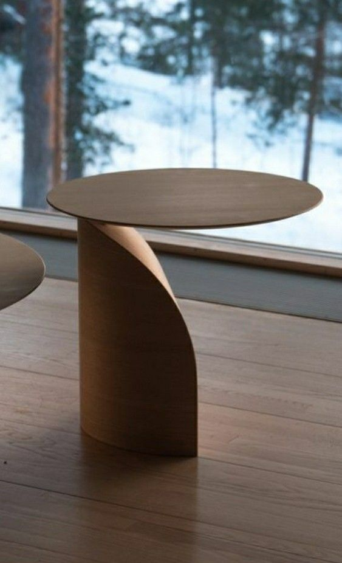

Galerie foto


Acestea nu sunt doar elemente frumoase și durabile de design interior, ci și capodopere ale măiestriei și artei prelucrarii lemnului. Procesul de producție a mobilierului din lemn necesită precizie, abilități și experiență în tâmplărie. Producția de mobilier din lemn constă în mai multe etape. Primul este designul care ține cont de dimensiunile, forma și funcționalitatea mobilierului.
Următoarea etapă este tăierea lemnului la dimensiune, care se face cu un ferăstrău, un ferăstrău de masă sau un ferăstrău manual.
Apoi marginile lemnului sunt slefuite pentru a obține o suprafață netedă. În funcție de proiect, lemnul este rindeluit, frezat și găurit. După prelucrarea corespunzătoare, este timpul să lipiți elementele din lemn. În această etapă, se folosesc adezivi speciali, care combină elementele individuale într-un întreg. Lipirea se poate face manual sau cu mașini precum o presă de lipit. Atunci este timpul să asamblați mobilierul, adică să combinăm elementele individuale într-un întreg. În funcție de design, pot fi utilizate diferite tehnici, cum ar fi articulațiile cu caneluri, pene sau corp. După plierea mobilierului, acesta este șlefuit suprafețele mobilei sunt netezite. Șlefuirea se poate face manual sau cu o mașină de șlefuit. Ultima etapă este finisarea mobilierului. Presupune aplicarea de vopsea, lac sau ulei pentru protejarea si decorarea suprafetei mobilierului. În acest scop, se folosesc diverse tehnici și instrumente de pictură: vopsirea cu pensula sau pulverizarea.